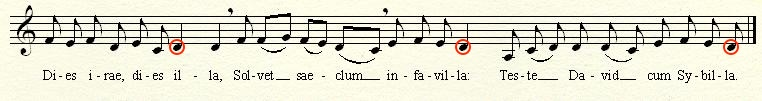

Twist the Dial: Same Notes, New Worlds
Prelude Day — UWM Peck School of the Arts — October 23, 2026
Dies irae: Modern Notation

source: Wikimedia Commons, “Dies Irae Treble.JPG” (public domain)
Same melody, modern treble clef: now we can see it start, circle, and land on D.
White Keys — D Final
White keys only, but D is home (“final”). That collection is called D Dorian.
Wrap 12 chromatic pitches around a circle: the same 7 white keys, with D on top.
Clockwise from D: W H W W W H W (whole & half steps). That pattern is Dorian.
What Is a Mode?
A mode is a collection of notes plus a final: one note that all others revolve around.
Same white keys, but now C is the final: our familiar major scale, also called C Ionian.
Twist the dial so that C is on top: the same 7 white keys, but a new center.
Clockwise from C: W W H W W W H. Compare D Dorian: W H W W W H W. Same notes, new final, new world.
Building Triads
Stack every other note of the scale (a third apart) to build a triad on each step.
3 flavors appear: major (I, IV, V), minor (ii, iii, vi), and diminished (vii°). Each mode puts them in a different order around its final.
Triads in D Dorian
Same white keys, same stacking — but now we count from D, the final.
Move the final and you move the center of gravity: every note and chord now leans toward D, not C. Same pieces, a whole new world.
Dorian’s fingerprint: a minor i, but a major IV (G–B–D), thanks to B♮, the raised 6th.
The Swiss Army Knife
Few materials, endless tools: just move the final, and the same pitches slice, dice, and do it all!
Modes are thus the family of scales built on the same collection of pitches, each with a different final. They are modes of one another, not isolated scales.
- C Ionian (major)
- D Dorian
- E Phrygian
- F Lydian
- G Mixolydian
- A Aeolian (natural minor)
- B Locrian
Twist the dial: same notes, new sense of key, new center of gravity, a whole new world.
Excerpts

Today’s scores can be found at this QR code →
(also accessible by clicking on the QR code.)
https://einbahnstrasse.github.io/orchestration-for-strings/excerpts
String Family — Range
The orchestral strings span over 7 octaves — comprising the full orchestral range.
- Violin: lowest string G3 (G below middle C); upper register extends well above E7.
- Viola: lowest string C3; its typical writing reaches into the high E6–G6 range.
- Cello: lowest string C2; upper register overlaps with violin’s middle register.
- Double bass: lowest string E1 (or, down to C1 with a low C foot); upper register reaches into the 5th octave.

Violin range, by string (Blatter, 49)

Viola range, by string (Blatter, 56)

Cello range, by string (Blatter, 61)

Bass range, by string (Blatter, 67)
Registers + Timbres
- The strings also feature extensive overlap in range between family members.
- Overlap supports effective doubling and enables seamless handoffs of melodic lines across registers.
- Timbres of string sounds are also unified across registers and across instruments:
- i.e., the same pitch/octave, at the same dynamic & bowing will sound perceptually close whether played by a violin, viola, cello, or double bass.
- The entire family can function as a hyper instrument — a continuous range of pitches; or, a single large instrument comprised of 4 constituent instruments.

Overlap in range of each string, on each instrument (source: Virtual Orchestration).
Dynamic Curves
- Some orchestral families project louder or softer in different registers (e.g., the oboe becomes quieter and “thinner” as pitch climbs.)
- The winds + brasses don’t achieve this unity of dynamic levels quite as easily.

Oboe dyanmic curve: loudness decreases across register (Blatter, 100).
Grouping Effects
Because of their large range, overlap, and dynamic continuity,
strings can form unified masses or distinct layers.
Strings easily blend with themselves and with other families,
but they can also form clearly separate orchestral planes —
A group of strings may fuse into a single sonority,
or divide into separate musical entities.
In other words, strings naturally support
both perceptual integration and stratification.
(We’ll explore what these mean in a minute — don’t fret!)
Because the strings produce sound colors (timbres)
that can be so closely related, composers are free to
move fluidly between perceptual states.
Perception?
Okay, wait, what?!
What do we mean by perceptual states,
and why are they essential to string scoring practices?
Auditory Streams
Cognitive psychology describes how the brain perceives sound:
We organize sound into concurrent streams of activity.
We are constantly interpreting what we hear;
grouping musical elements by similarity, proximity, etc.

source: Gestalt Principles in UX Design, Medium.com
Auditory Streams

Streams are like our counterpoint: By listening,
we discern how many melodic voices we’re hearing,
and which notes belong to which voices.
This constant motion of sonic activity is called a stream.
At any moment, sonic events may be heard as one coherent audio source,
or as separate, simultaneous layers.
Stratification
Stratification occurs when sounds belong to different sources.
In the orchestra, differences in register, timbre, rhythm, or articulation
may cause us to separate sounds into distinct perceptual streams.
We then sense a coexistence of independent layers,
like: foreground, middleground, and background.
We can intentionally orchestrate stratification to build
contrast, structural hierarchy, etc.
Integration
Integration occurs when our brains group multiple sounds together
and hear them as belonging to the same source.
In the orchestra, similar pitch range, timbre, articulation,
and rhythmic timing encourage sounds to fuse together.
Instead of separate instruments, the listener
perceives a single composite sonority.
We can integrate for blend, mass, and timbral cohesion.
Excerpts
Today’s scores can be found at this QR code →
(also accessible by clicking on the QR code.)
https://einbahnstrasse.github.io/string-orchestration-perception/excerpts
Divisi (Divided)
We can change the sound of the string section simply by altering:
how many string players are sounding at any given time.
This alters the section’s perceived:
- size
- presence
- tone color
Same notes — but different qualities entirely!
In the String Section
Changing the number of players doesn’t just change loudness —
It changes tone qualities within the section, like:
- how full it feels;
- how thin or dense it feels;
- whether we hear the strings in
the foreground or background
This is exactly what Koechlin tries to describe.
Charles Koechlin

Charles Koechlin (1867–1950) was a French
composer, orchestration theorist, and author of a
highly detailed 4-volume Treatise on Orchestration.
He treated sound as something physical:
not just notes, but mass, density, space.
Koechlin’s orchestration is less a rule-based scoring practice,
focusing instead on the effects of instrumental combinations.
Volume vs. Intensity
What happens when we change the size of the string section?
In Koechlin’s view, “volume” is not the same as loudness:
Volume = the apparent size of a sound
how wide, spacious, or extensive it feels
Intensity = the strength or loudness of a sound
(Loudness and size, therefore, are different attributes.)
Large vs. Small
What is a “large” sound, anyway?! — Year’s later, we can validate what Koechlin could sense...
source: Chiasson (2017) — measuring the most salient features of acoustic instruments
| Large Sound | Small Sound | |
|---|---|---|
| Intensity (loudness) | ↑ high | ↓ low |
| Spread of Energy | narrow peak | broad hill |
| Low frequency energy | ↑ strong | ↓ weak |
How to Score “Volume”
Turns out: “Size” depends on spread, loudness, and presence of low frequencies.
- low frequencies contribute to greater size
- Bass + harmonic partials seem to enlarge a sound, making it coherent & weighty
- But, size is not just a function of number of players...
Stay Out of the Mud!
- Overlapping instruments in all different registers, with unrelated pitch and rhythmic content can lead to muddiness and masking of higher frequency energy,
- reducing clarity; we’ll get a broad hill (like the one on the right) instead of a narrow peak, which will sound small rather than large.
- So, size needs to be carefully orchestrated with similarity considerations...
- (See today’s assignment for more information...)
Volume vs. Intensity
A sound can be:
- large but soft, meaning it can have both...
- ↑ high volume (size) and ↓ low intensity (loudness)
- or small but fierce / mighty...
- ↓ low volume (size) and ↑ high intensity (loudness)
- ...or somewhere in between!
Cosmic Density
To illustrate this, Koechlin considers celestial stars of varying density:
A flute in its low register can sound large and diffuse,
like a red giant — a large star with its matter spread out.
- ↑ high volume (size) and ↓ low intensity (loudness)
An oboe’s middle register can sound compact and concentrated,
like a white dwarf, with its mass compressed into a small space.
- ↓ low volume (size) and ↑ high intensity (loudness)
Transparency vs. Density
Transparent: ↑ high volume (large size) and ↓ low intensity
perception of — warm, diffuse, receding sound
Dense: ↓ low volume (small size) and ↑ high intensity
perception of — bright, compact, proximate, forward sound
Depth
Dense sounds tend to be heard in front.
Think: solo or small group expressive nuance
Transparent sounds tend to fall behind.
Think: section in unison, or a tutti chorus-like effect
Review
Orchestration shapes perceived volume, intensity, and spatial presence,
creating a continuum from transparent to dense textures.
| attribute | transparent | dense |
|---|---|---|
| how it hits | large, soft | small, fierce |
| volume | ↑ high | ↓ low |
| intensity | ↓ low | ↑ high |
| descriptors | warm, diffuse | bright, compact |
| spatial position | distant, background | proximate, foreground |
| “deep space” | red giant | white dwarf |
| woodwind analogy | low flute | middle oboe |
Divided Strings
When we divide string sections into smaller groups, Koechlin cautions:
extreme divisions (divisi) can produce “almost weightless sounds”
Dividing the string section:
- reduces mass, fullness
- reduces homogeneous sound
- reduces the chances of blending
- but, increases individual presence
Also, risks sounding thin.
Ways to Divide
Some methods of distributing players across lines, managing volume & intensity:
| method | what players do | notation |
|---|---|---|
| By Desks (stands) | Each stand divides: outer player on upper note, inner takes lower | 2 voices on 1 staff (div. or div. a 2) |
| Split in Half | Half the section plays; inner stand partners silent (tacet) |
Half, la metà, la moitié, die Hälfte |
| Expanded (3+ groups) |
Section divided into >2 groups; fewer players per line | div. a 3 or a 4+ on a single staff, or additional staves “Divide by stand” |
| Double Stops (non divisi) |
Each player performs multiple notes simultaneously | Multiple noteheads on 1 stem marked non divisi |
| Chamber (soli divisi) |
A subset of the section plays, then divides among given lines |
Marked “soli” (e.g., 8 soli divisi) |
La Traviata, mm. 1–7

Overture opens with a 4-part chorale harmonization
scored for 1st and 2nd violins
8 soli divisi — 8 players from 1sts + 8 players from 2nds
4 independent voices, each one executed by 4 players
Perceptual result:
- more dense: ↓ low volume (size) and, perhaps, ↑ high intensity (loudness)
- sounds more proximate or intimate; nuanced cues from individual playing
- spatially, seems more concentrated and in the foreground
- with 4 on each part, this passage avoids sounding too thin
La Traviata, Tutti (m. 8+)

From m. 8, 1sts & 2nds return to Tutti unision
lines, joined by viola & cello harmonies
What’s actually going on here?...
- ↑ more violinists on each melodic part
- introduces subtle chorus-like delays
and microtuning differences - pyschoacoustic cues: “This mass is now larger...”
- impression of a receded, more generic sound
- ↑ increased conditions for fullness and blend (Koechlin)
- e.g., violins can blend better with violas and cellos
- ↑ greater transparency
La Traviata, m. 18

At m. 18, the unison melody is made
even more transparent...
- 1st violin melody is joined by viola & cello
- viola & cello no longer harmonizing
- ↑ more cellists as they move to Tutti
La Traviata, m. 18
And, as a result...
own perceptual layer, creating a fusion

by promoting fullness and volume:
La Traviata, m. 18
At m. 18, the unison melody is made
even more transparent...
- 1st violin melody is joined by viola & cello
- viola & cello no longer harmonizing
- ↑ more cellists as they move to Tutti
- At the same time, the orchestra has also
stratified into 3 concurrent layers: - melody: 1st violin, viola, cello
- chordal accompaniment:
2nd violin, horns, upper winds - bass: double bass, bassoon
- why this works: similarity of timbre, register, onset, and articulation
leads to fusion within layers, and a separation between them - Interestingly, the strings are now distributed across all 3 layers,
rather than sounding as a single family
La Traviata, m. 18
This is not a coincidence; violins don’t just
miraculously fuse with cellos and violas...
It’s the result of Verdi’s careful preparation:
the management of size (volume), intensity
(loudness), similarity of musical materials,
fullness, and transparency.
Review
Now, we can add 2 more lines to our table...
| attribute | transparent | dense |
|---|---|---|
| how it hits | large, soft | small, fierce |
| volume | ↑ high | ↓ low |
| intensity | ↓ low | ↑ high |
| descriptors | warm, diffuse | bright, compact |
| spatial position | distant, background | proximate, foreground |
| “deep space” | red giant | white dwarf |
| woodwind analogy | low flute | middle oboe |
| chance of blend? | ↑ high | ↓ low |
| scoring method | full sectional, unison sound | solo or divisi |
Ravel, m. 1

Listen to the opening of Ravel’s Alborada del gracioso.
How many layers do you hear?
So, what’s actually happening?...
- Strings are all in pizzicato: dry attack, quick decay
- Harps provide a similar articulation,
reinforcing the same qualities of attack and decay - Careful control of doublings, register
- These are sources with different physical properties
- But coordinated in time, envelope, and spectrum
Result
- Not harp alone
- Not strings alone
- Not a stratified, layered texture
- Instead, we hear a single, unified sound object:
- A plucked, percussive, rapidly decaying timbre
- Playing many notes: a kind of 2-part oompah
structure, between bass and chords - Perceptually: this is like a guitar
Target Sounds
- The target sound here is not “strings” or “harp”
- The target is a guitar-like sound
- The strings are used to approximate that target
- This is a goal-directed process:
- Written parts are a specific means, not an ends;
- The intension is not to “use orchestral colors,”
but to evoke a specific sound - Ravel specifically sought to evoke the sound
of the guitar in this example.
Grouping
The guitar is a hyper instrument: a virtual guitar
consisting of string instruments that are added together.
How this is achieved:
- Onset synchrony: attacks align precisely
- Envelope similarity: shared plucked decay
- Compatibility: overlapping frequency regions
- Balanced intensity: no source dominates
- The sounds are fused into one perceptual object
Ravel, m. 98

Here is an emergent timbre: Its combined identity
is not reducible to individual instruments.
- Background: higher pitches fade out progressively,
lowering overall brightness and orchestral “fade.” - Foregrounded pizzicato: 1st & 2nd violins, upper
violas & cellos, and harps - Here, higher strings also progressively drop out, lowering brightness.
- Snare and cymbal do not fuse with the strings and xylophone
due to their inharmonic, noisy, unpitched timbres,
despite all instruments playing identical rhythms. - Balanced intensity: no source dominates
- The sounds are fused into one perceptual object
Natural Harmonics

- Produced by lightly touching the string
at specific points (nodes) - By suppressing the fundamental pitch, this
isolates chosen upper partials - Common nodes: 1/2, 1/3, 1/4 of the string length
- Resulting sound is:
- lighter and less dense
- reduced in low-frequency energy
- often described as glass-like in timbre
- highly transparent, promoting blend